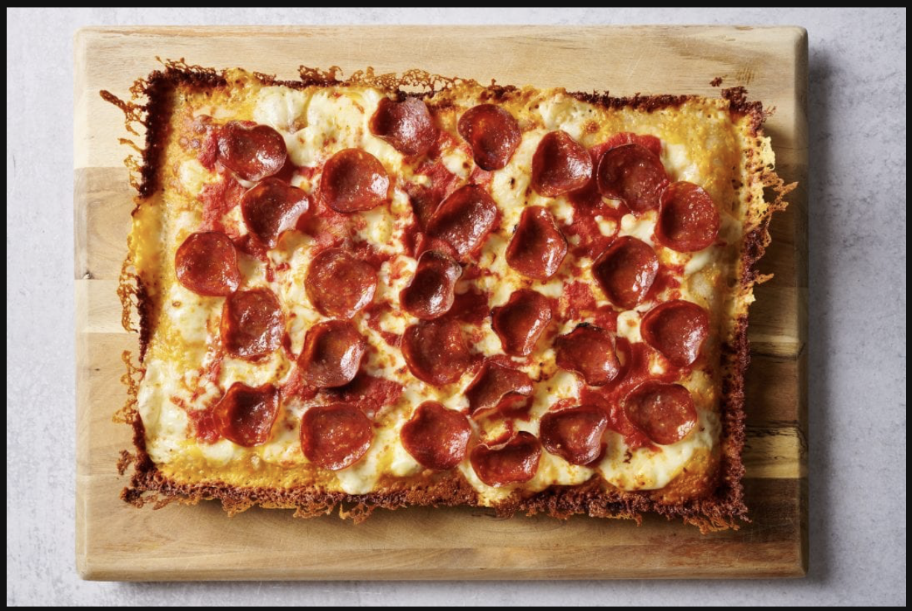

Pizza Recipee

Gormet Sourdough Pizza
This unbelievable pizza will leave you wanting more. It's delicate crust will have a beautiful crumb and bubble, and the carmelization will make the experience chew and crisp all at once. Each bit will leave you desperate for the next!
Ingredients
- water
- sourdough starter
- salt
- sauce
- cheese
Steps
- make dough
- put dough in oven for 5-6 min
- top with a light layer of cheese. Bake pizza for 2-3 minutes longer
- sauce and cheese pizza. Cheese should drape over the edge of the crust to apply proper carmelization
- bake another 10-12 min checking for doneness.